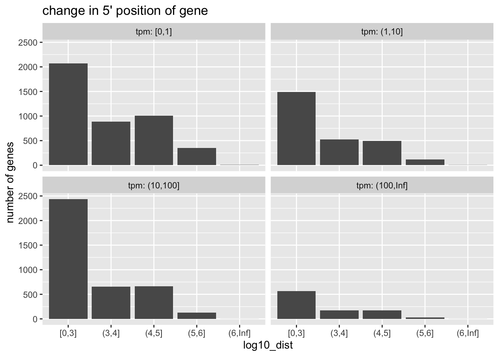

Chapter 10 Gene ranges in tximeta
Objective: explore how genes are located in the genome during summarization with tximeta.
The tximeta package (Love et al. 2020) imports gene expression quantification into Bioconductor. The package is built around a few main ideas:
- transcript-level quantification improves accuracy even for gene-level inference (Soneson, Love, and Robinson 2015)
- summarization to gene level is a common use case
- reference sequence hashes (think of a “barcode” that uniquely identifies the cDNA sequences) can be used to identify the provenance and release information of annotation
tximeta uses reference sequence hashes embedded in metadata files provided with Salmon (Patro et al. 2017) quantification output to automatically attach genomic range information, transcript-to-gene mapping, and genome build information to SummarizedExperiments. This is done automatically, on behalf of the user, without needing to specify the provenance or release numbers used during quantification. tximeta can also be used in combination with de novo transcriptomes or less common transcriptomes (see Love et al. (2020) or package vignette).
When data is summarized to the gene level, tximeta by default uses the
genes() function to locate the genes in the genome. This provides a
genomic range which starts with the leftmost position of any isoform
and ends with the rightmost position of any isoform. This however may
not be a good representation of the locus of transcription.
In this chapter, we explore an alternative way to assign ranges in tximeta’s summarization step, which is based on isoform abundance. We use plyranges and plotgardener packages to explore the differences between these two options for range assignment.
Data description: the macrophage package provides Salmon quantification files for a set of 24 RNA-seq samples from Alasoo et al. (2018). Data for six female human donors is available in the package, with gene expression at baseline, after IFN-gamma stimulation, after exposure to Salmonella, and after a combination of the two treatments. We won’t focus on the design of the experiment itself, but we will use transcript-level quantification data to explore the differences between the two range assignment options.
The following code chunk creates a coldata table describing the
samples.
library(macrophage)
library(dplyr)
library(tximeta)
dir <- system.file("extdata", package="macrophage")
coldata <- read.csv(file.path(dir, "coldata.csv")) %>%
mutate(files = file.path(dir, "quants", names, "quant.sf.gz"),
condition = factor(condition_name),
condition = relevel(condition, "naive")) %>%
select(files, names=sample_id, condition, line_id) %>%
slice(1:4) # subset to a few samples
coldata %>%
dplyr::select(-files)## names condition line_id
## 1 diku_A naive diku_1
## 2 diku_B IFNg diku_1
## 3 diku_C SL1344 diku_1
## 4 diku_D IFNg_SL1344 diku_1Importing the transcript-level data as a SummarizedExperiment:
se <- tximeta(coldata, dropInfReps=TRUE)We can then see the ranges of the transcripts and the genome build information:
library(SummarizedExperiment)
rowRanges(se)## GRanges object with 205870 ranges and 3 metadata columns:
## seqnames ranges strand | tx_id gene_id tx_name
## <Rle> <IRanges> <Rle> | <integer> <CharacterList> <character>
## ENST00000456328.2 chr1 11869-14409 + | 1 ENSG00000223972.5 ENST00000456328.2
## ENST00000450305.2 chr1 12010-13670 + | 2 ENSG00000223972.5 ENST00000450305.2
## ENST00000488147.1 chr1 14404-29570 - | 9483 ENSG00000227232.5 ENST00000488147.1
## ENST00000619216.1 chr1 17369-17436 - | 9484 ENSG00000278267.1 ENST00000619216.1
## ENST00000473358.1 chr1 29554-31097 + | 3 ENSG00000243485.5 ENST00000473358.1
## ... ... ... ... . ... ... ...
## ENST00000361681.2 chrM 14149-14673 - | 206692 ENSG00000198695.2 ENST00000361681.2
## ENST00000387459.1 chrM 14674-14742 - | 206693 ENSG00000210194.1 ENST00000387459.1
## ENST00000361789.2 chrM 14747-15887 + | 206684 ENSG00000198727.2 ENST00000361789.2
## ENST00000387460.2 chrM 15888-15953 + | 206685 ENSG00000210195.2 ENST00000387460.2
## ENST00000387461.2 chrM 15956-16023 - | 206694 ENSG00000210196.2 ENST00000387461.2
## -------
## seqinfo: 25 sequences (1 circular) from hg38 genomeseqinfo(se)## Seqinfo object with 25 sequences (1 circular) from hg38 genome:
## seqnames seqlengths isCircular genome
## chr1 248956422 FALSE hg38
## chr2 242193529 FALSE hg38
## chr3 198295559 FALSE hg38
## chr4 190214555 FALSE hg38
## chr5 181538259 FALSE hg38
## ... ... ... ...
## chr21 46709983 FALSE hg38
## chr22 50818468 FALSE hg38
## chrX 156040895 FALSE hg38
## chrY 57227415 FALSE hg38
## chrM 16569 TRUE hg38The default approach to assign ranges during summarization
(rowRanges will represent the total extent of all isoforms of the
gene):
gse_default <- summarizeToGene(se)## loading existing TxDb created: 2022-02-09 23:19:12## obtaining transcript-to-gene mapping from database## loading existing gene ranges created: 2022-02-09 23:20:02## gene ranges assigned by total range of isoforms, see `assignRanges`## summarizing abundance## summarizing counts## summarizing lengthAnd an alternative method to assign ranges by isoform abundance
(rowRanges will represent the extent of the most abundant isoform):
gse <- summarizeToGene(se, assignRanges="abundant")## loading existing TxDb created: 2022-02-09 23:19:12## obtaining transcript-to-gene mapping from database## loading existing gene ranges created: 2022-02-09 23:20:02## gene ranges assigned by isoform abundance, see `assignRanges`## summarizing abundance## summarizing counts## summarizing lengthNote that these two steps provide identical counts, abundance,
etc. They only differ by their rowRanges.
all.equal(assay(gse_default), assay(gse))## [1] TRUEWe can now compare the 5’ location of the ranges using the two approaches.
library(plyranges)
# plyranges to locate the 5' start using default approach
default_5p <- gse_default %>%
rowRanges() %>%
anchor_5p() %>%
mutate(width=1) %>%
start()Pull out information from the SummarizedExperiment: the average abundance over the samples, and the absolute distance between the 5’ start of the new and the old approach.
gene_dat <- gse %>%
rowRanges() %>%
anchor_5p() %>%
mutate(width=1) %>%
mutate(
ave_tpm = rowMeans(assay(gse, "abundance")),
dist = abs(start - default_5p))
# how many genes have same 5' start?
table(gene_dat$dist == 0)##
## FALSE TRUE
## 11775 46519While most genes have the same 5’ start, a good number have changed their start position.
We can summarize the extent of changes by gene expression:
library(ggplot2)
gene_dat %>%
as_tibble() %>%
filter(dist > 0) %>%
mutate(
log10_dist = cut(
log10(dist),
breaks=c(0,3:6,Inf),
include.lowest=TRUE),
tpm = cut(
ave_tpm,
breaks=c(0,1,10,100,Inf),
include.lowest=TRUE)
) %>%
group_by(log10_dist, tpm) %>%
tally() %>%
ggplot(aes(log10_dist, n)) +
geom_col() +
ggtitle("change in 5' position of gene") +
ylab("number of genes") +
facet_wrap(~tpm, labeller=label_both)
Considerations:
- The isoform-abundance based representation of the gene is likely a much more accurate description of the locus of transcription than the total gene extent.
- The isoform-abundance 5’ start can be very far away from the total gene extent 5’ start.
- Gene-level summary is an incomplete representation of transcription,
and perhaps it may be better to perform analysis on the transcript
level, e.g. DTE (see
swishin fishpond package orcatchSalmon/catchKallistoin edgeR) or DTU (seeDEXSeq,satuRn,diffSplicein limma package, Segers et al. (2023), or the rnaseqDTU workflow).
We conclude this chapter by diagramming the difference between the two approaches for a single gene, using plotgardener (Kramer et al. 2022).
We begin by building a custom genome assembly for plotgardener
functions. Note the use of tximeta::retrieveDb to pull the exact
TxDb used in quantification of the data for representation of the
ranges in the plots.
library(plotgardener)
library(org.Hs.eg.db)
# retrieves the correct TxDb/EnsDb for use in plots, etc.
txdb <- retrieveDb(gse)
new_assembly <- assembly(
Genome = "hg38",
TxDb = txdb,
OrgDb = org.Hs.eg.db,
gene.id.column = "GENEID",
display.column = "GENEID",
BSgenome = NULL
)We pick a random gene with a large distance and high expression:
set.seed(5)
gene <- gene_dat %>%
filter(strand == "-", dist > 1e5, ave_tpm > 100) %>%
slice(sample(n(),1))The following sets up the parameters for the following plotgardener command.
par <- pgParams(
chrom = seqnames(gene) %>% as.character(),
chromstart = round((start(gene) - 5e5) / 1e5) * 1e5,
chromend = round((end(gene) + 5e5) / 1e5) * 1e5,
assembly = new_assembly,
just = c("left", "bottom")
)Examine the isoform proportions for the top 5 isoforms of this gene:
props <- gene$iso_prop[[1]] %>%
sort(decreasing=TRUE) %>%
head(5)
props## ENST00000542652.6 ENST00000540638.6 ENST00000544123.5 ENST00000584651.5 ENST00000581292.5
## 0.35557166 0.31174119 0.07755495 0.06530776 0.03857342Highlight the gene, and the top 5 isoforms in the following plot.
gene_hilite <- data.frame(
gene=gene$gene_id,
color="magenta"
)
txp_hilite <- data.frame(
transcript=names(props),
color=rep(c("dodgerblue","darkgoldenrod"),c(1,length(props)-1))
)Building the plotgardener plot:
pageCreate(width = 5, height = 4, showGuides = FALSE)
plotGenes(
params = par, x = 0.5, y = 3.5, width = 4, height = 1,
geneHighlights = gene_hilite
)
plotTranscripts(
params = par, x = 0.5, y = 2.5, width = 4, height = 2.5,
transcriptHighlights = txp_hilite, fill="grey90"
)## Warning: Not enough plotting space for all provided elements. ('+' indicates elements not shown.)plotGenomeLabel(
params = par, x = 0.5, y = 3.5, length = 4,
just = c("left", "top")
)